Logic and Proof
29 The Infinite
29.1 Equinumerosity
Remember that in Chapter 21 we defined, for each natural number  ,
the set . We then said that a set
,
the set . We then said that a set  is
finite if there is a bijection between and
is
finite if there is a bijection between and  for some . A
set is said to be infinite if it is not finite.
for some . A
set is said to be infinite if it is not finite.
If and 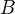 are two finite sets, then they have the same
cardinality if and only if there is a bijection between them. It turns
out that the same notion of "having the same cardinality" makes sense
even if and are not finite.
Definition. Two sets and are said to be equinumerous,
written , if there is a bijection between
them. Equivalently, we say that and have the same
cardinality.
At this stage, saying that and have the same cardinality may
sound strange, because it is not clear that there is any object, "the
cardinality of ," that they both "have." It turns out that, in
set-theoretic foundations, there are certain objects —
generalizations of the natural numbers — that one can use to measure
the size of an infinite set. There are known as the "cardinal numbers"
or "cardinals." But they are irrelevant to our purposes here: for the
rest of this chapter, when we say that and have the same
cardinality, we mean neither more nor less than the fact that there is
a bijection between them.
The following theorem says, essentially, the equinumerosity is an equivalence relation. (The caveat is that so far we have spoke only of relations between sets, and the collection of all sets is not itself a set.)
Proposition. Let , , and  be any sets.
be any sets.
- .
- If , then .
- If and
 then
then  .
.
The proof is left as an exercise.
29.2 Countably Infinite Sets
The set of natural numbers,  , is a prototypical example of an
infinite set. To see that it is infinite, suppose, on the other hand,
that it is finite. This means that there is a bijection
, is a prototypical example of an
infinite set. To see that it is infinite, suppose, on the other hand,
that it is finite. This means that there is a bijection  between
and for some natural number . We can restrict to the subset
between
and for some natural number . We can restrict to the subset
 of , and thereby obtain an injective map from to
. But this violates the pigeonhole principle, proved in Chapter 21.
of , and thereby obtain an injective map from to
. But this violates the pigeonhole principle, proved in Chapter 21.
Definition. A set is said to be countably infinite if it is
equinumerous with . A set is said to be countable if it is
finite or countably infinite.
Since the identity map is a bijection on any set, every
set is equinumerous with itself, and thus itself is countably
infinite.
The term "countably infinite" is meant to be evocative. Suppose is
a countable set. By definition, there is a bijection  . So has a "first" element
. So has a "first" element  , a "second" element , a
"third" element
, a "second" element , a
"third" element  , and so on. Since is a bijection, for
every element
, and so on. Since is a bijection, for
every element  of , is the
of , is the  th element enumerated in this
way, for a unique value of . That is, each element of is
"counted" at some finite stage.
th element enumerated in this
way, for a unique value of . That is, each element of is
"counted" at some finite stage.
With this definition in hand, it is natural to wonder which of our
favorite sets are countable. Is the set of integers  countable?
How about the set of rationals
countable?
How about the set of rationals  , or the set of reals ? At
this point, you should reflect on the logical form of the statement
" is countable," and think about what is required to show that a
set does or does not have this property.
, or the set of reals ? At
this point, you should reflect on the logical form of the statement
" is countable," and think about what is required to show that a
set does or does not have this property.
Theorem. The set of integers, , is countable.
Proof. We need to show that there exists a bijection between
and . Define as follows:
We claim that is a bijection. To see that it is injective, suppose
. If (and hence also  ) is nonnegative, then
) is nonnegative, then
 and are even, in which case implies . Otherwise, and are odd, and again
implies
and are even, in which case implies . Otherwise, and are odd, and again
implies  .
.
To see that is surjective, suppose is any integer. If is
nonnegative, then  . If is strictly negative, then is also strictly negative, and hence is an odd
natural number. In that case, it is not hard to check that .
. If is strictly negative, then is also strictly negative, and hence is an odd
natural number. In that case, it is not hard to check that .
We will now build up an arsenal of theorems that we can use to show that various sets are countable.
Theorem. A set is countable if and only if is empty or there
is a surjective function  .
.
Proof. For the forward direction, suppose is countable. Then it
is either finite or countably infinite. If is countably infinite,
there is a bijection from to , and we are done. Suppose, then,
that is finite. If is empty, we are done. Otherwise, for some
, there is a bijection  , with . Define a
function
, with . Define a
function  as follows:
as follows:
In other words,  enumerates the elements of by using first,
and then repeating the element . Clearly is surjective, as
required.
enumerates the elements of by using first,
and then repeating the element . Clearly is surjective, as
required.
In the other direction, if is finite, then it is countable, and we
are done. So suppose is not finite. Then it is not empty, and so
there is a surjective function . We need to turn
into a bijective function. The problem is that may not be
injective, which is to say, elements in may be enumerated more
than once. The solution is to define a function, , which eliminates
all the duplicates. The idea is that should enumerate the elements
, but skip over the ones that have already
been enumerated.
To be precise, the function is defined recursively as follows:
, and for every  , 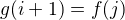, where
, 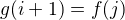, where  is the
least natural number such that is not among . The assumption that is infinite and is
surjective guarantees that some such always exists.
is the
least natural number such that is not among . The assumption that is infinite and is
surjective guarantees that some such always exists.
We only need to check that is a bijection. By definition, for
every , is different from . This
implies that is injective. But we can also show by induction that
for every , . Since is surjective, is too.
In a manner similar to the way we proved that the integers are countable, we can prove the following:
Theorem. If and are countably infinite, then so is  .
.
Proof. Suppose and are
surjective. Then we can define a function :
It is not hard to show that  is surjective.
is surjective.
Intuitively, if and , then we can enumerate as .
The next two theorems are also helpful. The first says that to show
that a set is countable, it is enough to "cover" it with a
surjective function from a countable set. The second says that to show
that a set is countable, then it is enough to embed it in a
countable set.
Theorem. If is countable and is surjective, then
is countable.
Proof. If is countable, then there is a surjective function , and 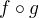 is a surjective function from .
Theorem. If is countable and is injective, then
is countable.
Proof. Assuming is injective, it has a left inverse,
. Since has a right inverse, , we know that is
surjective, and we can apply the previous theorem.
Corollary. If is countable and , then is
countable.
Proof. The function defined by is injective.
Remember that is the set of ordered pairs
where and are natural numbers.
Theorem. is countable.
Proof. Enumerate the elements as follows:
If you think of the pairs as coordinates in the  -
- plane, the
pairs are enumerated along diagonals: first the diagonal with pairs
whose elements sum to
plane, the
pairs are enumerated along diagonals: first the diagonal with pairs
whose elements sum to  , then the diagonal with pairs whose elements
sum to , and so on. This is often called a "dovetailing" argument,
because if you imagine drawing a line that weaves back and forth
through the pairs enumerated this ways, it will be analogous to the a
carpenter's practice of using a dovetail to join two pieces of
wood. (And that term, in turn, comes from the similarity to a dove's
tail.)
, then the diagonal with pairs whose elements
sum to , and so on. This is often called a "dovetailing" argument,
because if you imagine drawing a line that weaves back and forth
through the pairs enumerated this ways, it will be analogous to the a
carpenter's practice of using a dovetail to join two pieces of
wood. (And that term, in turn, comes from the similarity to a dove's
tail.)
As far as proofs go, the informal description above and the associated diagram are perfectly compelling. It is possible to describe a bijection between explicitly, however, in algebraic terms. You are asked to do this in the exercises.
The previous theorem has a number of interesting consequences.
Theorem. If and are countable, then so is  .
.
Proof. If 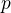 is any element of , write and
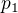 to denote the two components. Let 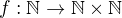
be a surjection, as guaranteed by the previous theorem. Suppose and  be surjective. Then the function is a surjective function from to .
be surjective. Then the function is a surjective function from to .
Theorem. The set of rational numbers, , is countable.
Proof. By the previous theorem, we know that is countable. Define by
Since every element of can be written as for some
and in , is surjective.
Theorem. Suppose that is countable. For each , the set  is countable.
is countable.
Proof. Remember that we can identify the set of -tuples of
elements from with , where there are
copies of in the product. The result follows using induction on
.
Theorem. Let  be a family of sets indexed by the
natural numbers, and suppose that each
be a family of sets indexed by the
natural numbers, and suppose that each  is countable. Then
is countable.
is countable. Then
is countable.
Proof. Suppose for each , is a surjective function from
to . Then the function is a surjective
function from to .
Theorem. Suppose that is countable. Then the set of finite
sequences of elements of is countable.
Proof. The set of finite sequences of elements of is equal to
, and we can apply the previous two theorems.
Notice that the set of all alphanumeric characters and punctuation (say, represented as the set of all ASCII characters) is finite. Together with the last theorem, this implies that there are only countably many sentences in the English language (and, indeed, any language in which sentences are represented by finite sequences of symbols, chosen from any countable stock).
At this stage, it might seem as though everything is countable. In the
next section, we will see that this is not the case: the set of real
numbers, , is not countable, and if is any set (finite or
infinite), the powerset of ,  , is not equinumerous
with .
, is not equinumerous
with .
29.3 Cantor's Theorem
A set is uncountable if it is not countable. Our goal is to
prove the following theorem, due to Georg Cantor.
Theorem. The set of real numbers is uncountable.
Proof. Remember that denotes the closed interval . It suffices to show that there is no surjective function 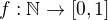, since if were countable, would be countable too.
Recall that every real number has a decimal expansion of
the form , where each is a digit
in . More formally, we can write  for each with .
for each with .
(Notice that can be written . In general every other rational number in will have two representations of this form; for example, . For concreteness, for these numbers we can choose the representation that ends with zeros.)
As a result, we can write

- …
(We use superscripts, , to denote the digits of . The superscripts
do not mean the " th power.")
th power.")
Our goal is to show that is not surjective. To that end, define a
new sequence of digits by
The define the real number . Then, for
each ,  differs from in the th digit. But this means
that for every ,
differs from in the th digit. But this means
that for every ,  . Since is not in the range of , and
hence is not surjective. Since was arbitrary, there is no
surjective function from to .
. Since is not in the range of , and
hence is not surjective. Since was arbitrary, there is no
surjective function from to .
(We chose the digits  and only to avoid and , to avoid
the case where, for example, 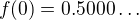 and . Since there are no zeros or nines in , since the
th digit of differs from , it really is a different real
number.)
and only to avoid and , to avoid
the case where, for example, 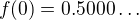 and . Since there are no zeros or nines in , since the
th digit of differs from , it really is a different real
number.)
This remarkable proof is known as a "diagonalization argument." We are
trying to construct a real number with a certain property, namely,
that it is not in the range of . We make a table of digits, in
which the rows represent infinitely many constraints we have to
satisfy (namely, that for each , ), and the columns
represent opportunities to satisfy that constraint (namely, by choosing
the th digit of appropriately). The complete the construction
by stepping along the diagonal, using the th opportunity to satisfy
the th constraint. This technique is used often in logic and
computability theory.
The following provides another example of an uncountable set.
Theorem. The power set of the natural numbers, , is uncountable.
Proof. Let be any function. Once again,
our goal is to show that is not surjective. Let  be the set of
natural numbers, defined as follows:
be the set of
natural numbers, defined as follows:
In words, for every natural number, , is in if and only if
it is not in . Then clearly for every , . So
is not surjective.
We can also view this as a diagonalization argument: draw a table with
rows and columns indexed by the natural numbers, where the entry in
the th row and th column is "yes" if is an element of
, and "no" otherwise. The set is constructed by switching
"yes" and "no" entries along the diagonal.
In fact, exactly the same argument yields the following:
Theorem. For every set , there is no surjective function from
to .
Proof. As above, if is any function from to ,
the set is not in the range of
.
This shows that there is an endless hierarchy of infinities. For example, in the sequence , there is an injective function mapping each set into the next, but no surjective function. The union of all those sets is even larger still, and then we can take the power set of that, and so on. Set theorists are still today investigating the structure within this hierarchy.
29.4 An Alternative Definition of the Infinite
One thing that distinguishes the infinite from the finite is that an infinite set can have the same size as a proper subset of itself. For example, the natural numbers, the set of even numbers, and the set of perfect squares are all equinumerous, even though the latter two are strictly contained among the natural numbers.
In the nineteenth century, the mathematician Richard Dedekind used this curious property to define what it means to be infinite. We can show that his definition is equivalent to ours, but the proof requires the axiom of choice.
Definition. A set is Dedekind infinite if is equinumerous
with a proper subset of itself, and finite otherwise.
Theorem. A set is Dedekind infinite if and only it is infinite.
Proof. Suppose is Dedekind infinite. We need to show it is not
finite; suppose, to the contrary, it is bijective with for some
. Composing bijections, we have that is bijective with a
proper subset of itself. This means that there is an injective
function from to a proper subset of . Modifying , we
can get an injective function from into , contradicting
the pigeonhole principle.
Suppose, on the other hand, that is infinite. We need to show that
there is an injective function from to a proper subset of itself
(because then is a bijection between and the range of
). Choose a sequence of distinct element of
. Let map each  to
to  , but leave every other
element of fixed. Then is injective, but is not in the
range of , as required.
, but leave every other
element of fixed. Then is injective, but is not in the
range of , as required.
29.5 The Cantor-Bernstein Theorem
Saying that and are equinumerous means, intuitively, that
and have the same side. There is also a natural way of saying that
is not larger than :
Definition. For two sets and , we say the cardinality of is
less than or equal to the cardinality of , written ,
when there is an injection .
As an exercise, we ask you to show that is a preorder,
which is to say, it is reflexive and transitive. Here is a natural
question: does and  imply ? In
other words, assuming there are injective functions and
, is there necessarily a bijection from to ?
imply ? In
other words, assuming there are injective functions and
, is there necessarily a bijection from to ?
The answer is "yes," but the proof is tricky. The result is known as the Cantor-Bernstein Theorem, and we state it without proof.
Theorem. For any sets and , if and , then .
29.6 Exercises
- Show that equinumerosity is reflexive, symmetric, and transitive.
- Show that the function is a bijection between the interval and .
- Show that the
 gives a bijection between
and .
gives a bijection between
and . Define a function by 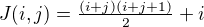. This goal of this problem is to show that is a bijection from to
.
a. Draw a picture indicating which pairs are sent to
 .
.
b. Let . Show that is equal the number of pairs
 such that either
such that either  , or
, or  and . (Use the fact that .)
and . (Use the fact that .)
c. Conclude that is surjective: to find
and such that
, it suffices to find the largest such that
, let , and let .
d. Conclude that is injective: if , let
 and . Argue that , and so
and .
and . Argue that , and so
and .
- Let be the set of functions from to . Use a
diagonal argument to show that is uncountable. (Notice that you
can think of a function 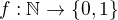 as an infinite
sequence of 0's and 1's, given by . So,
given a function which, for each natural number , returns
an infinite sequence of 0's and 1's, you need to find a sequence
that is not in the image of
 .)
.) If
and are functions from to , say that
if there is some such that for
every  , . In other words, from some point
on, is bigger than .
, . In other words, from some point
on, is bigger than .
Show that if
 is any sequence of functions
from to , indexed by the natural numbers, then there is
a function that eventually dominates each . (Hint:
construct so that for each ,
is any sequence of functions
from to , indexed by the natural numbers, then there is
a function that eventually dominates each . (Hint:
construct so that for each ,  for every .)
for every .)
- Show that the relation defined in Section 29.5 is reflexive and transitive.